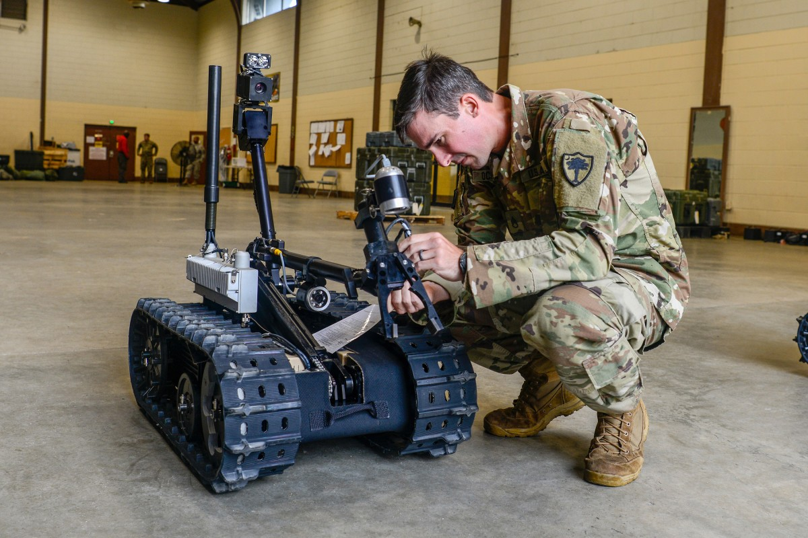
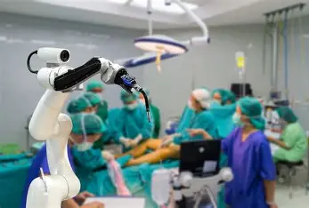

Different types of robots
Different types of robots are used for different purposes.
Industrial or Factory robots, such as SCARA robots or articulated arm robots, are robots designed for precision, speed and endurance in controlled and repetitive settings like assembly lines
they are designed to carry out factory tasks efficiently and many times over.
Military and Defense robots, such as Unmanned Aerial Vehicles or Autonomous Combat robots, are robots that speciallize in various needs for ruggedness, autonomy, stealth or firepower.
These robots can negate the need for humans in risky places in combat scenarios or enhance human capabilties in battle

Household and Personal robots, such as robot vacuum cleaners or social robots, are robots designed to be consumer friendly, with emphasis on safety and and usabilty
These robots serve more commercial functions such as helping with household chores or simulating human interactions.
Uses of robots in everyday life
Robots used at home are used as either Service or Social robots. They perform functions such as taking over numdane household chores like vacuum cleaning or mopping,
or can serve as entertainment or teaching assistants such as toy moving robots or talking robots
Robots can also serve in places like restaurants as service robots. These robots can carry out tasks such as serving food or cooking.
These robots improve the restaurants by reducing waiting time and taking over tasks that are more mundane such as cleaning dishes
Robots are also used in places such as themeparks as entertainment robots. entertainment robots are usually aesthetically pleasing and colourful.
These robots are built to provide fun and entertainment, for example by simulating various fictional characters and their movements
Robots are now also used in healthcare and medical situations. These robots can be used to assist surgeons in making precise or complicated surgical operations. these robots can help avoid mistakes and unnecesary scars in surgery.
can also serve to help those with need for medical assistance, such as reminder robots for those with important medicines.

How robots function and interact with the world
Robots that don't use remote controls are operated by computer programmes. A Computer in the robot acts as the equivalent of a human brain, taking inputs to perform actions from its program and sending the to its parts.
Similar to how the human brain sends signals through nerves to muscles, the computer program sends signals through the wires of a robot to the robots actuators such as robot motors to command them to rotate, making the robot move.
Conversely, when a program sends an input to stop, similar to a human brain deciding to stop, the computer sends signals through the wires to the actuators to command them to stop.
Robots can also simulate various human senses using different sensors to percieve the world around them, influencing their program's actions.
Some examples of such sensors are Visions Cameras that simulate eyesight by capturing images and video to allow for object recognition and navigation, microphones to simulate hearing by recieving sound waves for voice recognition, and tactile sensors to measure pressure, detect contact, or detect applied force.